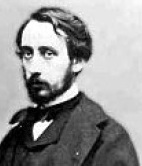

Edgar Degas (1834-1917), izlenimci akımla özdeşleşmiş sanatçıların en tanınmışlarından biridir. Ressam, tasarımcı, heykeltıraş, fotoğrafçı ve koleksiyoncu olarak, özellikle balerinlerin temsilleriyle ün yaptı.

Parisli, varlıklı bir bankacı ailede dünyaya gelen Degas, başlangıçta hukuk öğrenimi görmeye niyetliydi. Ancak, Louvre’da resim çalıştıktan sonra sanatçı olmaya karar verdi ve 1854’te çalışmaya başladı. İki yıl sonra Degas, yıllarca yaşayacağı, eski ustaların resimlerinin kopyasını yaptığı ve sonraki meslek hayatının temellerini attığı İtalya’ya taşındı. Başlangıçta klasik konulara ağırlık veren Degas, bununla beraber figürlerini gerçek bedenler üzerinde şekillendirdi. Erken dönem eseri Talim Yapan Genç Spartalılar (1860), çağdaş bir dekora antik bir tema yerleştirir.
Kuşağının birçok sanatçısı gibi Degas, fotoğrafçılığın icadından derinden etkilendi. Kamera ile denemeler yaptı ve onu çoğunlukla resimlerine hazırlık çalışmaları için kullandı. Simetri ve merkezde toplanmış kompozisyonlarının yoksunluğu ile adı kötüye çıkmış Japon baskılarından aynı şekilde etkilendi. 1861’de tanıştığı Gustave Courbet ve Edouard Manet gibi gerçekçi ressamlardan esinlenen Degas, Paris’in gündelik hayatını resmetmeye başladı.
1865 ile 1874 arasında Degas, soğukkanlı nesnelliği ile konuları yakalamaya çalıştığı kendi şahsî tarzını geliştirdi. 1868-70 yıllarında yaptığı İç Mekan’da (ya da Tecavüz) Degas izleyene, mahrem bir âna izinsiz giriyormuş gibi bir his verdi. Degas, izlenimcilerin sergilerinin yedisine eserlerini verdi. Akımı başlangıcından itibaren desteklemesine rağmen, “izlenimcilik” ifadesinden hoşlanmadı ve kendisini bir gerçekçi veya doğacı olarak tanımladı.
Degas, 1880 ile 1893 yılları arasında gücünün doruğuna erişti. Çeşitli araçlarla denemeler yaparak, daha akışkan etkileri başarmak için pasteli suluboya veya guaj ile birleştirdi. Meşhur yazar Emile Zola’nın sosyalist görüşlerinden esinlenerek, 1884’teki Ütü Yapan Kadınlar resminde görülebileceği gibi işçilerin sempatik portrelerini yaptı. 1886’daki son izlenimci sergiden sonra Degas, grup sergilerinde eserlerini göstermeyi bıraktı ve onun yerine özel satıcılarla çalıştı. Sonraki yıllarında daha parlak, daha az doğal renklerle çalışmaya eğilim gösterdi. Azalan görüş mesafesi ile bunalıma giren Degas, ölümünden beş yıl önce 1912’de resim yapmayı bıraktı.
Degas’ın eserinin en eleştirel değerlendirmesini, bir mektubunda “Şüphemden ve asabiyetimden kaynaklanan zalimliğe karşı hissettiğim bir çeşit çekimden dolayı tüm dünyaya karşı zordum veya zor göründüm.” diye yazarak, sanatçının bizzat kendisi yaptı.
EK BİLGİLER:
1. Ekim 1872’de Degas, annesinin doğum yeri olan New Orleans’ta beş ay kalmak üzere Paris’i terk etti. 1873’te New Orleans Pamuk Ofisi’nin resimlerini yaptı.
2. Degas, çoğunlukla sone formunda şiirler de yazdı.